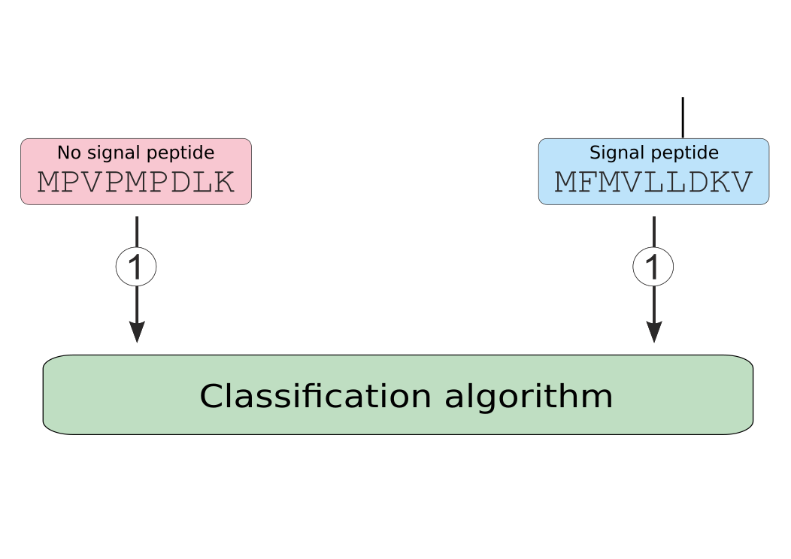

Alphabet reduction in signal peptide prediction
Michał Burdukiewicz
University of Wrocław
30-01-2017
University of Wrocław
30-01-2017
30-01-2017
Alphabet reduction
Amino acid encoding
- For machine learning algorithms amino acids are usually described as vectors of 20 bits (e.g., alanine is 1000000000000000).
- The distance between very similar amino acids (as D and E) is the same as a distance between two very different amino acids (as D and W).
Signal peptide structure

- The regional structure of signal peptide does not rely on specific residues, but rather on their physicochemical properties.
- The only (partial) exception is the cleavage site (the first cleavage site predictor used a reduced amino acid alphabet (von Heijne 1983)).
Aim

- The reduction of amino acid alphabet is an equivalent of an assignment of amino acid aggregates to larger groups based on chosen properties.
Aim
- Remove unnecessary information.
- Decrease number of sequences required to train a signal prediction algorithm.
- Create more universal decision rules.
Universality
- Organisms may undergo a global shift in a proteome composition (Brbić et al. 2015).
- Their signal peptides must still have physicochemical properties required for the proper recognition.
Implement reduced alphabet
Orthogonality
- Feature encoding is orthogonal towards the classification methods.
Orthogonality

Orthogonality

Comparison of algorithms
- The classification algorithm incorporating a reduced amino acid alphabet should always be compared with its equivalent trained on sequences described in the full alphabet.
- The tuning of parameters should be done separately for classifier involving a reduced amino acid alphabet.
Generation of reduced alphabets
Previous research
- Prediction of signal peptides was done before and it does not provide any edge over the full alphabet (Maetschke, Towsey, and Bodén 2005).
- We need reduced alphabets tailored for the signal prediction problem.
Source of reduced alphabets

Properties of amino acids
All scale were normalized 0-1. Points are jittered over net charge.
Properties of amino acids
All scale were normalized 0-1. Points are jittered over net charge.
How large alphabet?
All scale were normalized 0-1. Points are jittered over net charge.
Which properties?
All scale were normalized 0-1. Points are jittered over net charge.
Results
Our model
- We build a signal peptide predictor (based on hidden semi-Markov models) separately for each of 96 reduced alphabets.
- We chose the best-performing reduced amino acid alphabet in cross-validation experiment using only non- eukaryotic sequences.
- The resulting predictor in the benchmark had the best AUC not only for signal peptides of other eukaryotes, but also for signal peptides.
Performance
| MCC | AUC | |
|---|---|---|
| signalP 4.1 (no tm) | 0.6872 | 0.8667 |
| signalP 4.1 (tm) | 0.6196 | 0.7951 |
| signalP 3.0 (NN) | 0.7220 | 0.8938 |
| signalP 3.0 (HMM) | 0.5553 | 0.7734 |
| PrediSi | 0.3849 | 0.6453 |
| Philius | 0.5684 | 0.7707 |
| Phobius | 0.5895 | 0.7880 |
| signalHsmm-2010 | 0.7409 | 0.9262 |
| signalHsmm-2010 (hom. 50%) | 0.7621 | 0.9384 |
| signalHsmm-2010 (raw aa) | 0.6853 | 0.8718 |
| signalHsmm-1987 | 0.7271 | 0.9063 |
| signalHsmm-1987 (hom. 50%) | 0.7194 | 0.9090 |
| signalHsmm-1987 (raw aa) | 0.6350 | 0.8350 |
Benchmark data set: proteins from UniProt data base (51 proteins with signal peptide and 211 proteins without signal peptide).
Best-performing reduced amino acid alphabet
| Group | Amino acids |
|---|---|
| I | D, E, H, K, N, Q, R |
| II | G, P, S, T, Y |
| III | F, I, L, M, V, W |
| IV | A, C |
PCA of amino acid composition
Summary
Challenges
- How to choose smartly the most optimal reduced amino acid alphabet?
- How to reduce the homology of the training data set? Should one reduce the homology using sequences described in the full or a reduced amino acid alphabet?
Proposed framework
- Define which categories of physicochemical properties should be used to generate reduced amino acid alphabets.
- Remove too colinear properties.
- Define the minimum and maximum length of reduced amino acid alphabets.
- Create reduced amino acid alphabets.
- Choose non-redundant amino acid alphabets.
- Perform cross-validation comparing reduced amino acid alphabets.
References
Brbić, Maria, Tobias Warnecke, Anita Kriško, and Fran Supek. 2015. “Global Shifts in Genome and Proteome Composition Are Very Tightly Coupled.” Genome Biology and Evolution 7 (6): 1519–32. doi:10.1093/gbe/evv088.
Maetschke, Stefan, Michael Towsey, and Mikael Bodén. 2005. “BLOMAP: An Encoding of Amino Acids Which Improves Signal Peptide Cleavage Site Prediction.” In In Chen Y., Wong L: Proc. 3 Rd AsiaPacific Bioinformatics Conference, Imperial, 141–50. College Press.
von Heijne, Gunnar. 1983. “Patterns of Amino Acids Near Signal-Sequence Cleavage Sites.” European Journal of Biochemistry 133 (1): 17–21.